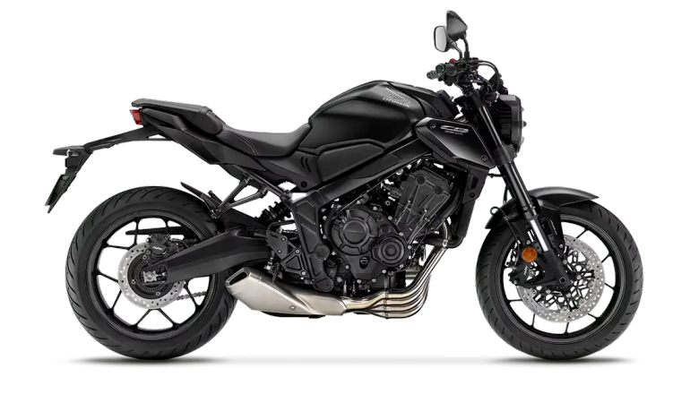

Hobby's
Ik heb altijd een sterke interesse gehad in alles wat met technologie en computers te maken heeft.
Van jongs af aan wilde ik begrijpen hoe dingen precies werken — niet alleen wat ik op het scherm zie,
maar vooral wat er achter de schermen gebeurt.
Die nieuwsgierigheid heeft me stap voor stap steeds dieper de digitale wereld ingetrokken.
Ik vind het boeiend om te leren hoe systemen, netwerken en software met elkaar communiceren,
en hoe ik ze kan optimaliseren of aanpassen om ze beter te laten functioneren.
Tech
Ik vind het interessant om te begrijpen hoe apparaten met elkaar communiceren en hoe een netwerk opgebouwd is.
Het instellen van routers, switches en verbindingen is voor mij niet zomaar een technische taak,
maar eerder een soort puzzel waarbij je zoekt naar de beste en meest stabiele oplossing.
Het idee om complexe netwerken te beheren en te optimaliseren zonder dat je er letterlijk aan hoeft te sleutelen,
past perfect bij mijn interesses en manier van denken.
Ook op mijn computer besteed ik veel tijd aan het verbeteren van mijn setup.
Ik ben iemand die graag begrijpt hoe dingen werken. Als er een probleem optreedt,
wil ik niet alleen weten dat het opgelost is, maar ook waarom het gebeurde. Het geeft me plezier om zelf oplossingen te vinden,
ook al duurt dat wat langer. Technologie is voor mij niet alleen een hobby,
maar ook iets waar ik graag professioneel verder mee wil. Ik voel me het best in een omgeving waarin ik achter de computer kan werken.
Games
Gamen is voor mij meer dan alleen vermaak,
het is een manier om mijn strategisch denken en probleemoplossend vermogen te trainen.
Wat ik verder leuk vind aan gamen en technologie is dat het me uitdaagt om te blijven leren.
Een groot deel van mijn vrije tijd breng ik door achter de computer.
Ik hou van games waarin ik niet zomaar iets volg, maar echt iets opbouw.
Co-op simulatiegames waarin je van nul begint en samen met anderen een bedrijf of project opzet, spreken me erg aan.
Het geeft me voldoening om stap voor stap te groeien,
om processen efficiënter te maken en om te zien hoe inspanning zich omzet in vooruitgang.
Of het nu gaat om voorraadbeheer,
klantinteractie of het uitbreiden van een onderneming in een virtuele wereld, ik vind het allemaal interessant
omdat het tegelijk ontspannend en uitdagend is.
Favoriete genres
-
Base building / Management
-
Shooters
-
Party games
-
Roguelite

Er valt altijd iets nieuws te ontdekken.
Die nieuwsgierigheid is iets wat ik ook buiten het gamen meeneem. Ik heb graag het gevoel dat ik ergens beter in word,
dat ik nieuwe dingen begrijp en dat ik mijn kennis kan toepassen in de praktijk.
In mijn vrije tijd gebruik ik technologie niet alleen als ontspanning, maar ook als leermiddel. Gamen leert me plannen,
samenwerken en snel beslissen, terwijl mijn interesse in netwerken en systemen me helpt om analytisch te denken. Alles wat ik doe,
draait eigenlijk om hetzelfde idee: begrijpen hoe iets werkt en het daarna beter maken. Dat kan een spel, een netwerk,
een computerinstelling of zelfs mijn eigen werkstijl zijn.
Vrije tijd

Buiten de technologie om geniet ik ook van rustige momenten.
Soms luister ik gewoon naar muziek, kijk ik wat video’s of tour ik met mijn motorfiets.
Kort gezegd ben ik iemand die zich thuis voelt in de digitale wereld,
maar ook geniet van eenvoudige, rustige momenten.